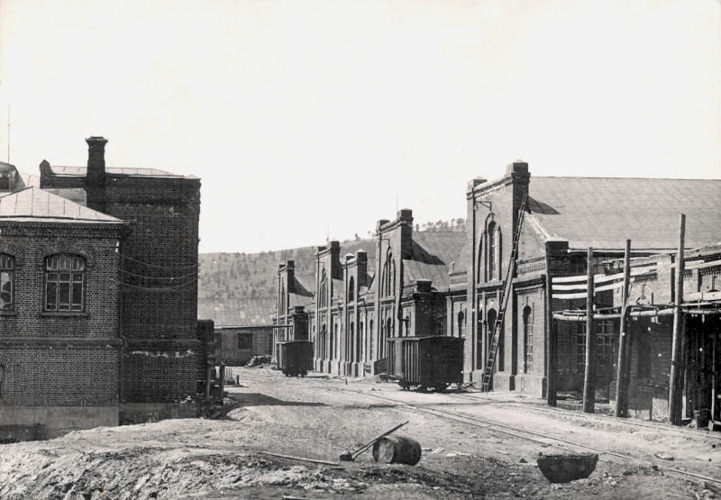
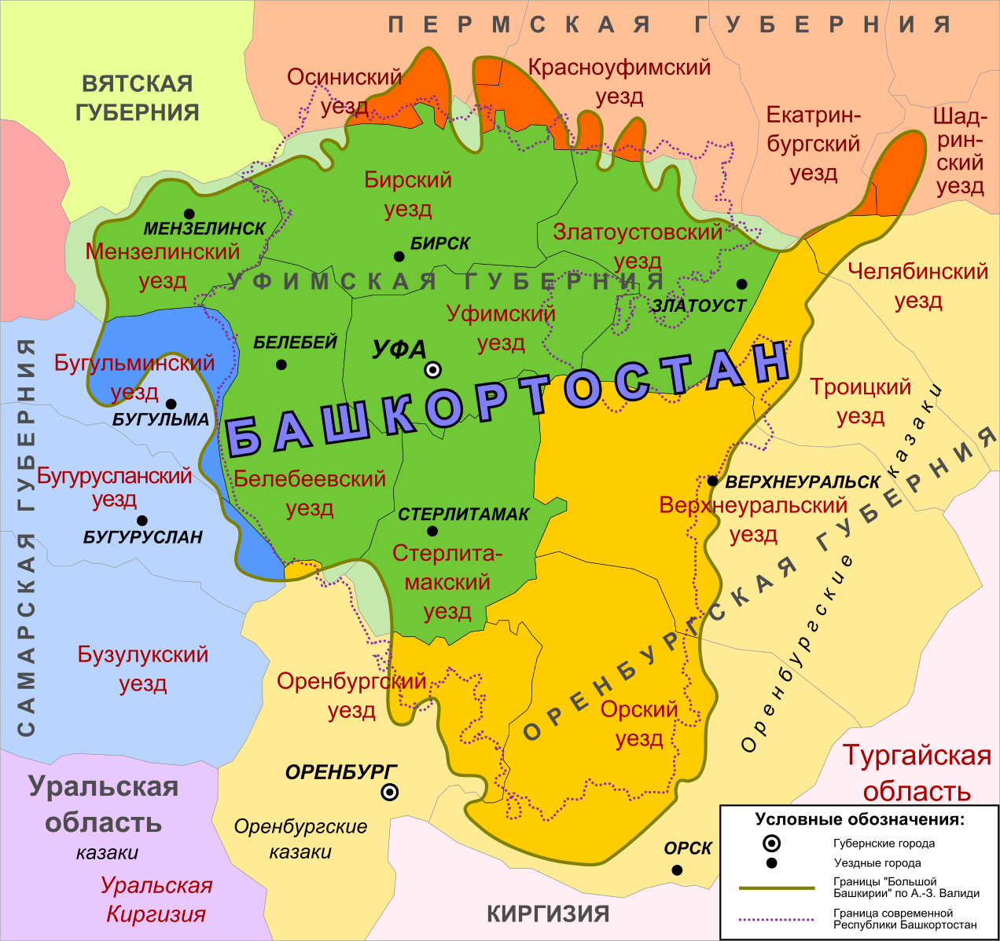
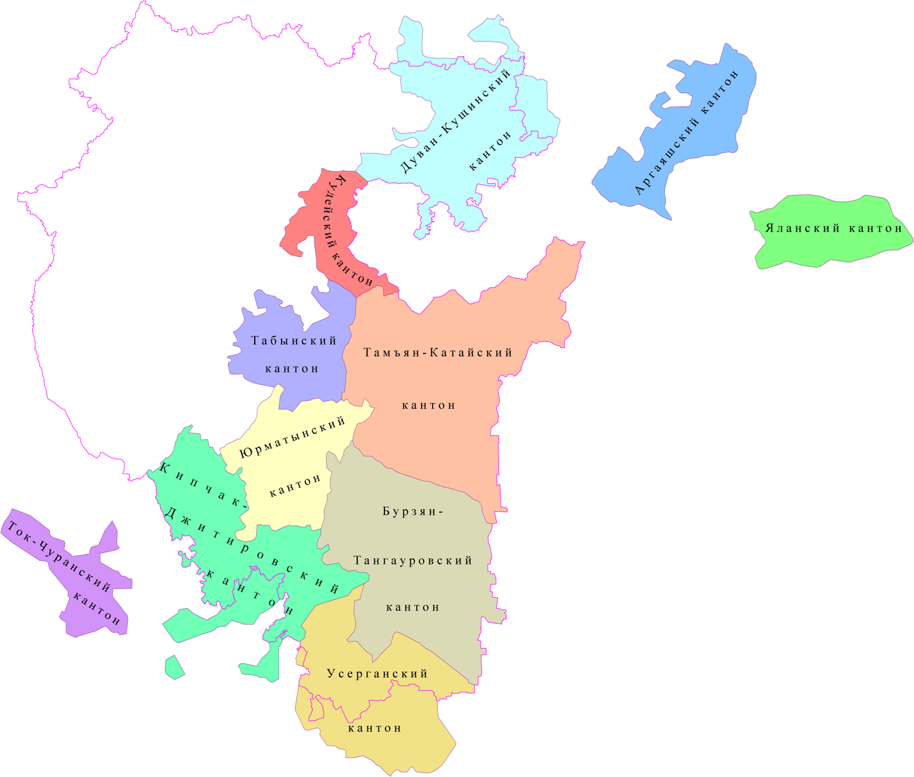
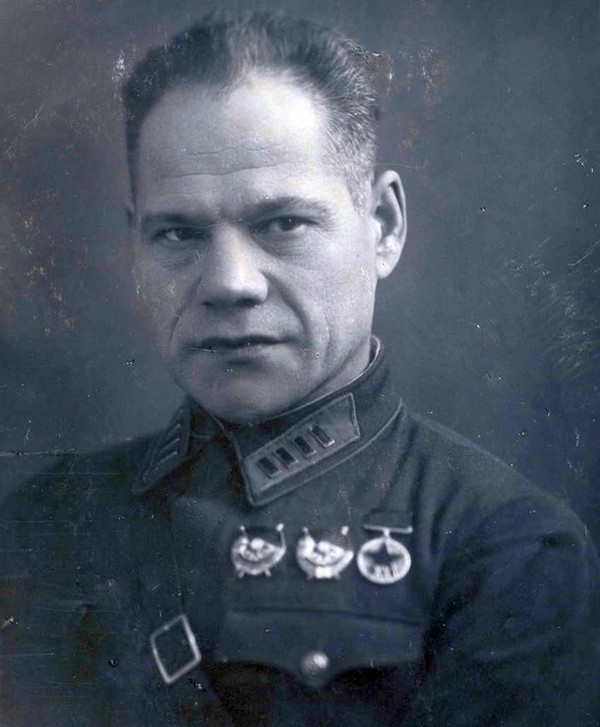
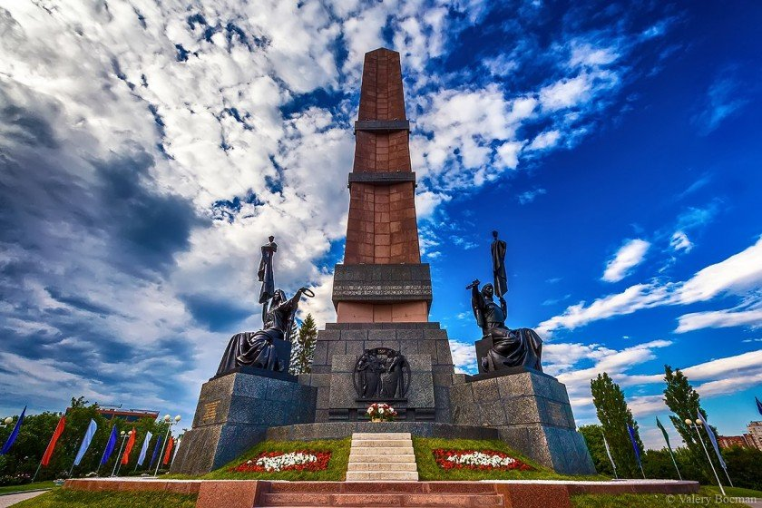

Дореволюционное время. Территория Башкортстана была разделена на несколько губерний: Центральная и Северная Башкирия принадлежала Уфимской губернии, Южго-Восток - Оренбургской. Также, по просьбе самих башкир, Уфимская губерния с 1901 года делилась на волости. Таким образом, к 1917 году башкирская губерния состояла из 222 волостей, в каждой из которых было примерно 10 тысяч человек. Стоит отметить, что хотя царская власть пыталась разрушить крестьянские общины, на территории Башкортстана их было большое количество, потому что почти всё крестьянство входило в общины. Кроме того, с аграрной реформой Столыпина (переселение крестьян на хутора) в башкирский край стягивалось население, из-за чего плотность росла и начиналась нехватка земли; постепенно некоторые, в основном бедные, переселенцы уходили в Сибирские районы. В любом случае Башкортстан оставался аграрным - почти 90% населения проживало в сёлах и деревнях.
В годы Первой Мировой войны (1914-1917) из края было мобилизовано более 300 тысяч мужчин и 25 тысяч лошадей, причиной этому стали выступления в городах Башкирии - начался патриотический подъём населения. Также наступил промышленный бум башкирского района (как и всей империи): на Белорецком и Инзерском заводах возросло производство стали и чугуна на 40%! Однако не хватало рабочих рук (к работе привлекались женщины), а выпуск бытовых товаров сократился на 30-35%: в результате, подскочили цены в 2-3 раза и постепенно наступал голод. В 1916 властью было принято решение ввести карточную систему.
Башкирская автономия, или Башкурдистан. После февральской революции башкирским правительством было принято решение получить собственную автономию. На съезде курултая башкиры задумались над созданием демократической республики в Федеративной России. Для начала была организована Малая Башкирия, в которую вошли южные уезды Пермской, восточная часть Самарской, Север Оренбургской губерний; столицей предполагаемой республики стала Уфа. Площадь нового автономного края была около 80 тысяч км² с населением более 1,2 миллиона человек.
Уже в сентябре 1918 года между правительством Малой Башкирии и Комитетом членов Учредительного Собрания (Антибольшевистское движение организованное в Самаре) был подписан акт о независимости Башкурдистана. Ещё летом 1918 года началось создание Башкирской армии, первой и основной задачей которого стало нападение на Екатеринбург и освобождение его от большивиков. Объединившись с казаками, башкирская армия 18 июля заняли Екатеринбург, а осенью освободили Орск. Была полностью очищена Транссибирская магистраль, что обеспечило безопасность адмирала Колчака и его войск (Временного правительства).
По прибытию в столицу развалившейся империи Колчак совершил государственный переворот и объявил себя правителем России. Адмирал не признал башкирскую автономию - таким образом, все надежды курултая создать Башкурдистан не оправдались. Кроме того, Колчак приказал распустить всё башкирское правительство, в том числе и армию. Это стало самой большой ошибкой: основной фронт против большевиков был разрушен, из-за чего новоиспечённому правителю пришлось, потерпев поражение от рабочей партии, бежать в Сибирь.
В итоге, башкирская армия вместе с казаками прекратила борьбу и пошла на переговоры с Советской властью. Теперь весь военный корпус перешёл к Советам, что лишь укрепило позицию большевиков.
Образование Башкирской АССР и её дальнейший путь развития. Переговоры начались 19 февраля, уже через месяц, 20 марта (23 марта в печати) между председателем Совнаркома Владимиром Лениным и председателем Башкирского правительства Мухаметханом Кулаевым был подписан акт «Соглашение Советской власти с Башкирским правительством об образовании Автономной Башкирской Советской Республики». Надо сказать, что именно так называлась республика (Автономная Башкирская Советская Социалистическая республика) вплоть до 1937, пока не был принят новый флаг и герб тогдашней Башкирии. Таким образом, Башкортстан стал первым, кто добился автономии, и был единственным, кто вошёл в состав РСФСР на договорных отношениях.
19 мая 1920 года вышел декрет, который серьёзно урезал права автономии Башкирии, прописанные в акте присоединения республики к РСФСР. В знак протеста республиканский ревком (Военно-революционный комитет, т. е. основное правительство) распустился, однако реакции со стороны правительства не последовало. Территории Башкирской ССР были невероятно малы: поначалу столицей нового края было село Темясово, затем стал город Стерлитамак. В 1920 годах республику охватили выступления против большивиков, в ноябре богатые крестьяне начили восстание, которое продлилось недолго - под селом Юмагузина повстанцы были разбиты. Весной 1921 года началось новое восстание, охватившее большую территорию. Летом Советы пошли на переговоры, однако требования восставших не были выполнены, они были арестованы на месте.
В 1922 году Исполнительный Комитет, по просьбе башкир, принял решение присоединить к БССР «Большую Башкирию», 14 июня Уфимская губерния прекратила своё существование, а Уфа стала столицей Башкирии. Несмотря на хорошие новости, лето 1922 года принесло сильнейший голод в башкирский край: было около 70% (2 миллиона человек) голодующих. Срочно начилась организация общественных столовых, в которых питалось более половины населения! Итогом всего этого стало сокращение численности населения на 22% (650 тысяч человек), крестьянских хозяйств на 17%, посевных площадей (51%), числа овец (60%), лошадей (53%), крупно-рогатого скота (37%).
За 30-е годы произошли определённые изменения. Изменился национальный состав: численность среди населения башкир возросла (26% → 35%), а русских наоборот упала (34 → 28). Произошли изменения в образовании: с 1935 года во всех школах было обязательно учить русский язык, в этом же году башкирский алфавит перевели на русскую графику. В 1927 году была построена первая уфимская радиостанция, в 1935 телефонная линия на 3 тысячи номеров, позже в 1937 году между Уфой и Москвой была проведена телефонная линия.
Нельзя оставить без внимания, что башкирское и татарское правительство пыталось стать Союзной республикой (т. е. выйти из состава РСФСР), но Иосиф Сталин запретил независимость двух регионов, сказав:«Башкирскую и Татарскую республику нельзя переводить в разряд союзных, так как они со всех сторон окружены советскими республиками и областями и им, собственно говоря, некуда выходить из состава СССР.»
Великая Отечественная война и Башкирская АССР. В ВОВ с территории республики было мобилизировано более 700 тысяч человек, здесь было подготовлено более 30 воинских подразделений, наиболее известные из них: 112-я кавалерийская дивизия (легендарная башкирская конница, которая отличилась во взятии Красного Яра; дивизией было уничтожено около 3000 солдат неприятеля, 56 танков, 6 самолётов, 6000 автомашин фашистов; командиры: М. М. Шаймуратов (В честь него была написана песня «Шаймуратов-генерал»), позже Г. А. Белов), 214-я, 1292-я истребительно-противотанковая дивизии. На уфимских заводах были построены бронепоезда «Полководец Суворов», «Александр Невский», «Салават Юлаев» и «Уфимец». Боевые самолёты произведённые здесь получили названия: «Башкирский колхозник», «Башкирский нефтяник», «Комсомолец Башкирии», «Пионер орденоносной Башкирии», «Учитель Башкирии».
В Башкирию было эвакуировано более 100 заводов, 20 военных госпиталей, большую поддержку оказывала добыча нефти с республиканской территории. Население активно помогало воевавшим на фронте: было собрано 83 тысячи пар валенок, около 21 тысячи полушубков, 30 тысяч ватных курток, более 36 тысяч шапок-ушанок. Из этого можно сделать вывод, что Башкирская АССР внесла свой, ощутимый вклад в Великой Отечественной войне, оказывая максимальную поддержку фронту.
Послевоенное время (40-е, 50-е года). После ВОВ в республике началась активная добыча нефти, ведь кавказские нефтяные скважины были истощены, а Сибирь пока не разрабатывалась. В новых городах БАССР (в Кумертау, Салавате), в которых добывали драгоценное чёрное золото, получила развитие нефтехимия, а также машиностроение (строились легковые автомобили, авиация, сельскохозяйственная техника). В Башкирии социализм продолжал развиваться: этому способствовало регулирование правительством экономики и труда. За успехи в промышленности и народном хозяйстве, а также в честь 400-летия присоединения Башкортстана к России, БАССР была награждена вторым орденом имени Ленина.
Надо сказать, что активно развивалось башкирское искусство. Например, в 1955 году в Москве прошла выставка «Декада башкирской литературы и искусства». Она имела невероятный успех среди населения столицы, наиболее известные художники: Б. Ф. Домашников, А. Ф. Лутфуллин, А. В. Пантелеев, А. А. Кузнецов, Р. М. Нурмухаметов и другие. Музыка республики не осталась в стороне, её представляли композиторы Хусаин Ахметов, Камиль Рахимов, Рауф Муртазин, Тагир Каримов и другие. Ознакомиться с деятелями искусства можно на нашем сайте во вкладке «Культура».
60—80-е года. На этой стадии достигнувший высшего развития социализм завершал своё развитие. Третья Конституция Башкирской АССР 1978 гарантировала бесплатное среднее и высшее образование, бесплатную медицинскую помощь, бесплатное жильё, право ны отдых и труд, равенство среди народов республики и т. д. Край в 1969 вышел на второе место по добыче нефти (почти 45 миллионов тон в год), количество крупно-рогатого скота достигло 2 миллионов голов, а урожай пшеницы достигал 5,5 миллионов тон! За эти заслуги республика получила почётный орден Октябрьской Революции.
Культурное развитие тоже достигло высшего уровня: башкирские композиторы (Рафик Сальманов, Сулейман Абдуллин, Рамазан Янбеков, Абдулла Султанов), художники (В. А. Позднов, Ф. А. Кащеев, П. П. Салмасов), театральные актёры (М. Файзи, Г. Мубарякова, Ф. Гафаров), поэты (Мустай Карим. Аухатов, Рашит Назар) имели большую популярность в Советском Союзе.
Перестройка и образование РБ. 1987 год стал началом перестройки (публикация в газете Правда об уходе в отставку Сафронова, Печникова и Богданова). Немного позже началось экологическое движение со стороны население, которое положило конец постройке Иштугановского водохранилища. В 1989 году был создан Башкирский центр «Урал», а через год по всем городам республики прошли митинги в защиту экологии.
11 октября 1990 года была принята Декларация о государственном суверенитете (Башкирская ССР → Башкортстан). Московские митинги Ельцина никак не отразились в городах Башкирии - жители продолжали работать как ни в чём не бывало. 31 марта 1992 года республиканским правительством был подписан договор с Российской Федерацией о разделении полномочий по управлению регионом, а в 1992 года 25 апреля была утверждена новая Конституция РБ. С 1993 года перезидентом Башкортстана стал Мустафа Рахимов, при нём было введено 13 кодексов (О защите лесов, рек, земли, да и экологии в целом, также о защите здоровья граждан, о средствах массовой информации и другие).
Такой путь прошла дореволюционная мятежная Башкирия, чтобы стать промышленно-устойчивым и мощным регионом РФ — Башкортстаном.